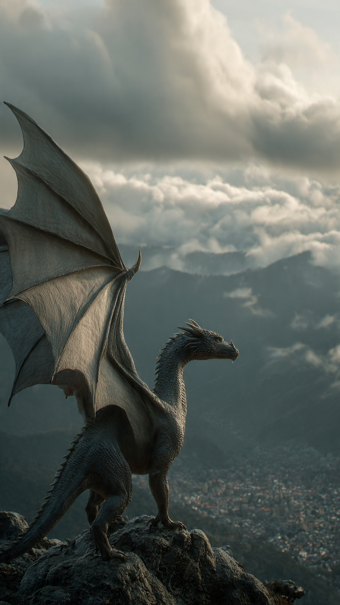
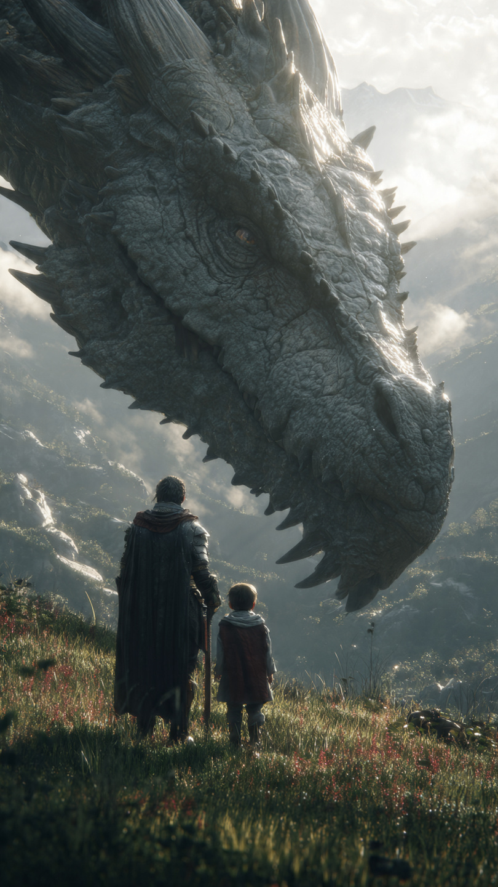

في أقصى جبال النار، حيث لا يصل البشر ولا تظهر الطرق على أي خريطة، كانت توجد مملكة التنانين الحمراء.
كانت قمم الجبال تشتعل بالنيران ليلًا ونهارًا، وكانت التنانين تحلق فوق السحب، يملأ زئيرها السماء كلها.
ومنذ آلاف السنين، عاش التنانين وفق قانون واحد لا يتغير:
"البشر أعداء... ولا يستحقون الرحمة."
وكان كل تنين صغير، عندما يبلغ سن الطيران، يُجبر على اجتياز اختبار يسمى **"لهيب البداية"**.
في هذا الاختبار، يهاجم التنين أول قرية بشرية يجدها، ويثبت أنه جدير بالانضمام إلى جيش المملكة.
ومن يفشل...
يُطرد إلى الأبد.
لكن في إحدى الليالي، وُلد تنين مختلف عن الجميع.
كان اسمه أزور.
امتلك حراشف زرقاء لامعة بدلًا من الحمراء، وعينين بلون البحر، ولهيبًا أزرق لا يشبه أي تنين آخر.
اعتقد الجميع أن هذا مجرد اختلاف في الشكل.
لكن الحقيقة كانت أعمق من ذلك.
فأزور لم يكن قادرًا على كراهية البشر.
كبر أزور وهو يسمع قصص الحروب القديمة.
وكان يسأل دائمًا:
"هل كل البشر أشرار؟"
لكن الشيوخ كانوا يغضبون من سؤاله، ويقولون:
"لا تُكثر من التفكير."
"نفذ الأوامر فقط."
ومع مرور السنوات، اقترب موعد اختباره.
كان يعلم أن مصيره سيتحدد في تلك الليلة.
طار أزور مع مجموعة من التنانين نحو أقرب قرية بشرية.
اختبأ بين الغيوم، ثم بدأ الجميع ينفثون النار على المنازل.
اشتعلت الأسقف الخشبية.
وانتشر الذعر في كل مكان.
لكن أزور لم يطلق أي لهب.
بل رأى فتاة صغيرة تحاول إنقاذ أخيها من منزل يحترق.
سمع بكاءها.
وشاهدها تسقط تحت سقف متهدم.
وفي لحظة لم يفكر فيها...
انقض بسرعة.
وحطم السقف بجناحيه.
وحمل الطفلين بعيدًا عن النيران.
توقف البشر والتنانين عن الحركة في الوقت نفسه.
لم يصدق أحد ما رآه.
أما قائد التنانين، فزأر بغضب شديد وقال:
"لقد أنقذت بشرًا!"
"لقد خنت قوانين المملكة!"
وقبل أن يتمكن أزور من الرد...
ظهرت علامة ذهبية غريبة على صدره، بدأت تتوهج بقوة.
تراجع جميع التنانين إلى الخلف في ذهول.
وقال أحد الشيوخ بصوت مرتجف:
"هذا... ختم الحارس الأول!"
📷 الصورة رقم 1

تراجع جميع التنانين في صمت وهم ينظرون إلى العلامة الذهبية التي ظهرت على صدر أزور.
لم تكن مجرد علامة.
بل رمزًا قديمًا لم يره أحد منذ قرون.
همس أحد الشيوخ بصوت مرتجف:
"إنه ختم الحارس الأول..."
"لقد ظننا أنه اختفى إلى الأبد."
ساد الصمت.
حتى قائد جيش التنانين بدا مرتبكًا.
اقترب كبير الحكماء، وكان أقدم تنين في المملكة.
نظر إلى أزور طويلًا، ثم قال:
"منذ ألف عام..."
"كان البشر والتنانين يعيشون معًا في سلام."
"وكان هناك حارس واحد يحمي العالمين."
"لكن خائنًا أشعل حربًا بين الطرفين، واختفت الحقيقة مع مرور الزمن."
ثم تنهد وأضاف:
"ويبدو أن الختم اختارك لتعيد ما ضاع."
لكن قائد الجيش لم يقتنع.
ضرب الأرض بذيله بقوة وقال:
"هذه خيانة!"
"البشر قتلوا أجدادنا."
"ولا مكان لمن يرحمهم."
ثم أعلن أمام الجميع:
"اعتبارًا من هذه اللحظة..."
"أزور مطرود من مملكة التنانين."
غادر أزور الجبال وحيدًا.
وحلق أيامًا طويلة حتى وصل إلى وادٍ أخضر لم تطأه التنانين منذ زمن.
هناك التقى بالفتاة الصغيرة التي أنقذها.
كان اسمها ليان.
في البداية خافت منه.
لكنها تذكرت أنه هو من أنقذها.
اقتربت منه ببطء، ومدت يدها.
ولأول مرة في التاريخ...
صافح إنسانٌ تنينًا دون خوف.
بدأت ليان تُري أزور قريتها.
رأى الأطفال يلعبون.
ورأى المزارعين يعملون في الحقول.
ورأى الناس يساعدون بعضهم بعضًا.
أدرك أن ما قيل له طوال حياته لم يكن الحقيقة كاملة.
فليس كل البشر أشرارًا.
كما أن ليس كل التنانين قساة.
لكن بينما كان الأمل يبدأ بالعودة...
اسودّت السماء فجأة.
وظهر فوق الجبال تنين ضخم بلون الفحم، له قرنان طويلان وعينان حمراوان.
كان اسمه **دراجور**، أقوى محارب في جيش التنانين.
زأر بصوت هز الوادي كله وقال:
"بأمر الملك..."
"جئت لأعيد الخائن."
ثم نظر إلى القرية.
وأضاف ببرود:
"أو أحرقها بالكامل."
وفي اللحظة نفسها...
بدأت النيران تتجمع داخل فمه، استعدادًا لإطلاق أقوى لهيب عرفته مملكة التنانين.
📷 الصورة رقم 2

وقف أزور أمام القرية، ناشرًا جناحيه الواسعين ليحمي الناس خلفه.
كان يعلم أن دراجور أقوى منه في القوة والخبرة.
لكن هذه المرة لم يكن يقاتل من أجل المجد...
بل من أجل الأبرياء.
زأر دراجور بقوة، وأطلق سيلًا هائلًا من اللهب الأحمر.
لكن أزور اندفع إلى السماء، وأطلق لهبه الأزرق لأول مرة بكامل قوته.
التقى اللهبان في الهواء، فأنارا السماء بلون بنفسجي مذهل، واهتز الوادي من شدة الاصطدام.
وبينما كانت المعركة تشتد، بدأ الختم الذهبي على صدر أزور يزداد إشراقًا.
وفجأة انطلقت منه أشعة من الضوء نحو قمة الجبل.
اهتزت الصخور، وانشقت الأرض، وخرج منها معبد قديم لم يره أحد منذ قرون.
توقفت جميع التنانين عن القتال.
حتى دراجور نظر بدهشة إلى المعبد.
دخل أزور وليان إلى المعبد.
وفي داخله كانت جدران ضخمة تحمل رسومات قديمة.
تنانين وبشر يقفون جنبًا إلى جنب.
يبنون المدن.
ويزرعون الحقول.
ويحمون العالم معًا.
وفي منتصف القاعة، كانت توجد بلورة شفافة.
ما إن لمسها أزور...
حتى ظهرت صور من الماضي.
رأى أن الحرب القديمة لم تبدأ بسبب البشر أو التنانين.
بل بسبب ساحر مظلم خدع الطرفين، ونشر الكراهية بينهما حتى يتحكم في العالم.
لكن الحقيقة ضاعت مع مرور الزمن، ولم يبقَ سوى الحقد.
خرج أزور من المعبد وهو يحمل البلورة.
ورفعها أمام الجميع.
شاهد التنانين والبشر الذكريات نفسها.
ورأوا الحقيقة بأعينهم.
خفض دراجور رأسه ببطء.
وقال بصوت حزين:
"لقد عشنا قرونًا نحارب بسبب كذبة."
ثم أطفأ النار التي كانت تشتعل حوله.
وتقدم نحو أزور.
قال ملك التنانين، الذي وصل مع بقية الجيش:
"لقد خالف أزور أوامرنا..."
"لكنه أنقذ مستقبلنا."
ثم انحنى أمامه لأول مرة في تاريخ المملكة.
وفعلت جميع التنانين الشيء نفسه.
أما أهل القرية، فقد خرجوا من بيوتهم، ووضع الأطفال الزهور أمام أزور وليان.
وفي ذلك اليوم، وُقعت أول معاهدة سلام بين البشر والتنانين منذ ألف عام.
مرت السنوات.
وأصبحت التنانين تحلق فوق المدن دون خوف.
وساعدت البشر في إطفاء الحرائق، وحماية القرى، ونقل المسافرين عبر الجبال.
أما أزور...
فلم يُعرف في التاريخ بأنه أقوى تنين.
بل عُرف بأنه التنين الذي امتلك الشجاعة ليقول:
"لا."
لا للكراهية.
ولا للحرب.
ولا للأكاذيب.
ولذلك...
غيّر العالم كله.